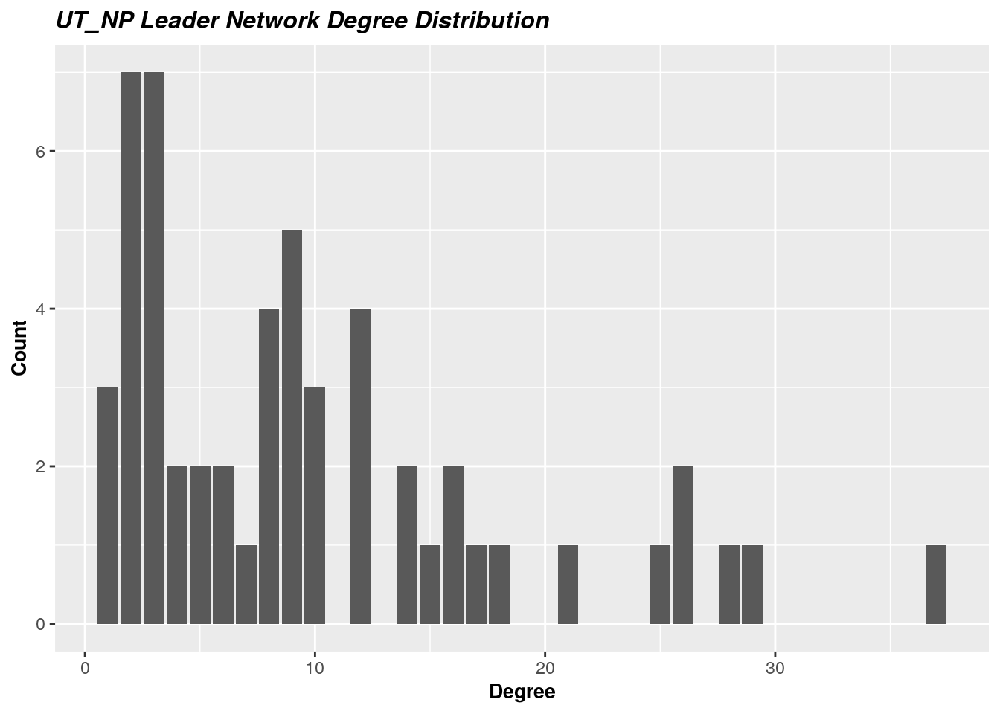
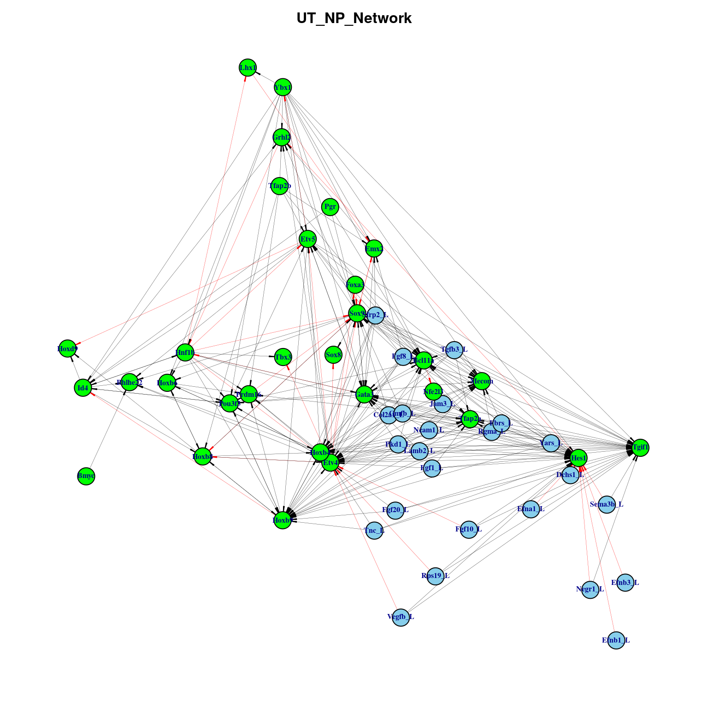
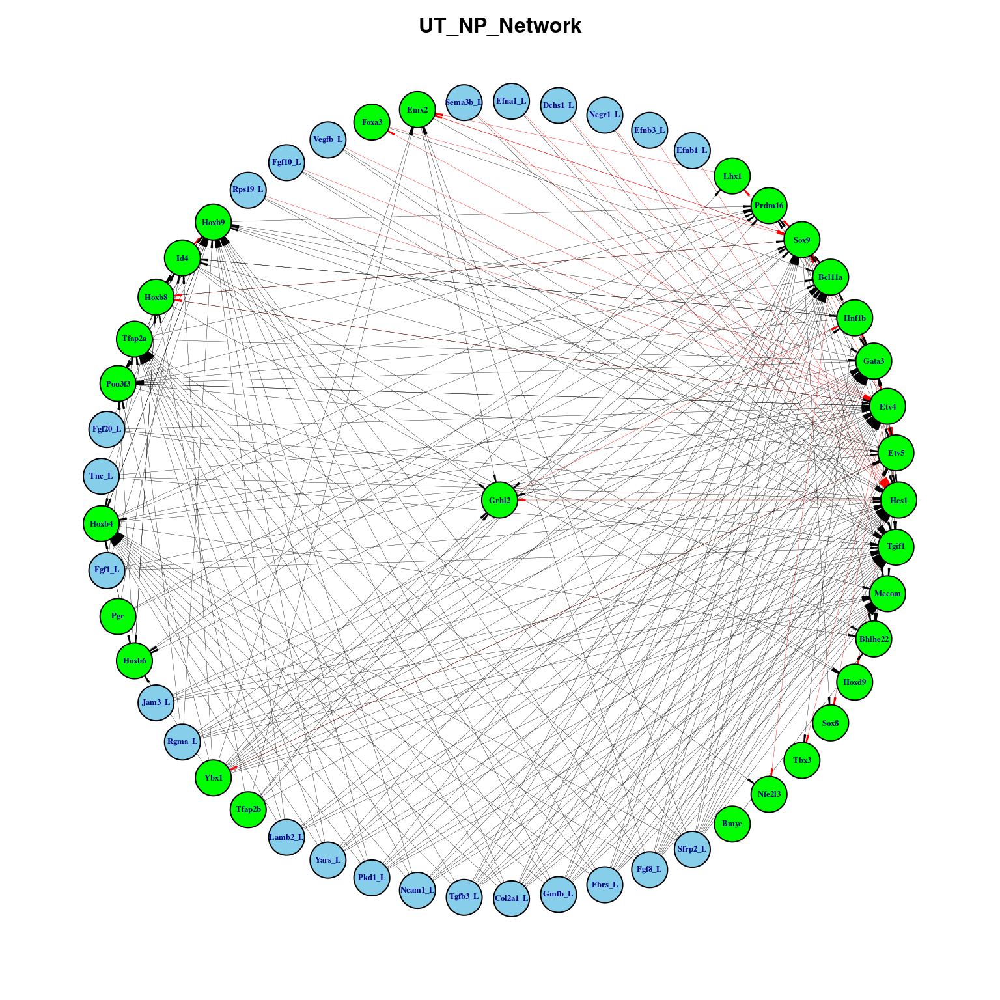

NicheNet-SCENIC regulon leaders integrated network analysis when Nephron Progenitor sends signal to Ureteric Tip
Mehran Piran
2022-08-01
Last updated: 2022-08-08
Checks: 7 0
Knit directory: myproject/
This reproducible R Markdown analysis was created with workflowr (version 1.7.0). The Checks tab describes the reproducibility checks that were applied when the results were created. The Past versions tab lists the development history.
Great! Since the R Markdown file has been committed to the Git repository, you know the exact version of the code that produced these results.
Great job! The global environment was empty. Objects defined in the global environment can affect the analysis in your R Markdown file in unknown ways. For reproduciblity it’s best to always run the code in an empty environment.
The command set.seed(20220803) was run prior to running
the code in the R Markdown file. Setting a seed ensures that any results
that rely on randomness, e.g. subsampling or permutations, are
reproducible.
Great job! Recording the operating system, R version, and package versions is critical for reproducibility.
Nice! There were no cached chunks for this analysis, so you can be confident that you successfully produced the results during this run.
Great job! Using relative paths to the files within your workflowr project makes it easier to run your code on other machines.
Great! You are using Git for version control. Tracking code development and connecting the code version to the results is critical for reproducibility.
The results in this page were generated with repository version 3b2b40f. See the Past versions tab to see a history of the changes made to the R Markdown and HTML files.
Note that you need to be careful to ensure that all relevant files for
the analysis have been committed to Git prior to generating the results
(you can use wflow_publish or
wflow_git_commit). workflowr only checks the R Markdown
file, but you know if there are other scripts or data files that it
depends on. Below is the status of the Git repository when the results
were generated:
working directory clean
Note that any generated files, e.g. HTML, png, CSS, etc., are not included in this status report because it is ok for generated content to have uncommitted changes.
These are the previous versions of the repository in which changes were
made to the R Markdown
(analysis/Network_Analysis_UT_Leaders.Rmd) and HTML
(docs/Network_Analysis_UT_Leaders.html) files. If you’ve
configured a remote Git repository (see ?wflow_git_remote),
click on the hyperlinks in the table below to view the files as they
were in that past version.
| File | Version | Author | Date | Message |
|---|---|---|---|---|
| Rmd | 3b2b40f | mehranpiran | 2022-08-08 | Network analysis files were added |
\(~\)
\(~\)
Constructing NicheNet-SCENIC integrated network
library(igraph)
library(tidyverse)
library(ggplot2)
library(DT)
UT_NP_lr <- readRDS("UT_NP_lr_edgelist.rds")
UT_NP_lt <- readRDS("UT_NP_lt_edgelist.rds")
regreg_edgelist <- readRDS("RegReg_edgelist.rds")
regulons <- readRDS("UT_Regulons.rds")
colnames(UT_NP_lr) <- c("Ligands" , "Targets")
lrt <- rbind(UT_NP_lr, UT_NP_lt)\(~\)
\(~\)
regreg_edgelist[,1] %>% unique() [1] "Tfap2b_22g.ex" "Pou3f3_41g" "Hoxb4_43g.ex" "Hoxb9_59g.ex"
[5] "Hoxb6_42g.ex" "Tfap2a_43g" "Hnf1b_412g" "Etv4_2174g"
[9] "Bmyc_18g" "Sox9_484g" "Id4_414g" "Etv5_1854g"
[13] "Lhx1_19g" "Ybx1_1896g.ex" "Gata3_205g" "Hoxb8_28g.ex"
[17] "Foxa3_43g.ex" "Pgr_48g.ex" "Grhl2_11g" "Emx2_42g.ex"
[21] "Hes1_27g.ex" "Prdm16_22g" "Bcl11a_30g.ex"edgelist <- matrix( 0 , dim(regreg_edgelist)[1] , 2) %>% as.data.frame()
for(i in 1:2){
edgelist[,i] <- regreg_edgelist[,i] %>% strsplit(split = "_") %>% lapply(function(x) x[1]) %>% unlist()
}
colnames(edgelist) <- c("From" , "To")\(~\)
\(~\)
common_genes <- c(intersect(lrt$Ligands , edgelist$From) , intersect(lrt$Ligands , edgelist$To) ,
intersect(lrt$Targets , edgelist$From) , intersect(lrt$Targets , edgelist$To)) %>% unique()
common_genes [1] "Gata3" "Hes1" "Hoxb9" "Etv4" "Tfap2a" "Bcl11a" "Hoxb4" "Sox9"
[9] "Emx2" "Etv5" "Mecom" "Tgif1" regulon_names <- names(regulons) %>% strsplit(split = " ") %>% lapply(function(x) x[1]) %>% unlist() %>%
strsplit(split = "_") %>% lapply(function(x) x[1]) %>% unlist()
intersect(regulon_names , common_genes) [1] "Emx2" "Hoxb4" "Hoxb9" "Bcl11a" "Tfap2a" "Gata3" "Sox9" "Mecom"
[9] "Etv5" "Hes1" "Etv4" "Tgif1" genesTokeep <- unique(c(common_genes , regulon_names))\(~\)
\(~\)
if(all(unique(edgelist$From) %in% unique(edgelist$To))){
reg_core_edgelist <- edgelist[ edgelist$To %in% genesTokeep , ]
}else{
n <- unique(edgelist$From)[!unique(edgelist$From) %in% unique(edgelist$To)]
idx <- edgelist$From %in% n & edgelist$To %in% genesTokeep
reg_core_edgelist <- edgelist[ edgelist$To %in% genesTokeep | idx , ]
}
rownames(reg_core_edgelist) <- 1:length(reg_core_edgelist[,1])
dim(reg_core_edgelist)[1] 126 2\(~\)
\(~\)
lrt_core <- lrt[lrt$Ligands %in% genesTokeep | lrt$Targets %in% genesTokeep , ]
dim(lrt_core)[1] 140 2head(lrt_core) Ligands Targets
83 Rgma Gata3
84 Rgma Hes1
85 Rgma Hoxb9
89 Rgma Mecom
91 Rgma Tgif1
96 Rgma Etv4rownames(lrt_core) <- 1:dim(lrt_core)[1]
colnames(lrt_core) <- c("From" , "To")
edgelist <- rbind(lrt_core , reg_core_edgelist)
if(any(duplicated(edgelist))){
edgelist <- edgelist[ !duplicated(edgelist) , ]
}
dim(edgelist)[1] 266 2head(edgelist) From To
1 Rgma Gata3
2 Rgma Hes1
3 Rgma Hoxb9
4 Rgma Mecom
5 Rgma Tgif1
6 Rgma Etv4\(~\)
\(~\)
c(lrt$Ligands,lrt$Targets) %>% unique() %>% length[1] 128c(regreg_edgelist$From,regreg_edgelist$To) %>% unique() %>% length[1] 30c(edgelist$From,edgelist$To) %>% unique() %>% length[1] 54c(lrt_core$From , lrt_core$To) %>% unique() %>% length[1] 36\(~\)
\(~\)
Network Descriptives
\(~\)
net = graph.data.frame(edgelist , directed = T)
is.connected(net)[1] TRUEnetIGRAPH b4829a6 DN-- 54 266 --
+ attr: name (v/c)
+ edges from b4829a6 (vertex names):
[1] Rgma ->Gata3 Rgma ->Hes1 Rgma ->Hoxb9 Rgma ->Mecom Rgma ->Tgif1
[6] Rgma ->Etv4 Rgma ->Tfap2a Rgma ->Bcl11a Negr1 ->Hes1 Negr1 ->Tgif1
[11] Col2a1->Gata3 Col2a1->Hes1 Col2a1->Hoxb4 Col2a1->Hoxb9 Col2a1->Mecom
[16] Col2a1->Tgif1 Col2a1->Etv4 Col2a1->Sox9 Col2a1->Tfap2a Col2a1->Bcl11a
[21] Vegfb ->Hes1 Vegfb ->Tgif1 Vegfb ->Etv4 Fgf20 ->Hes1 Fgf20 ->Hoxb9
[26] Fgf20 ->Tgif1 Fgf20 ->Etv4 Jam3 ->Gata3 Jam3 ->Hes1 Jam3 ->Mecom
[31] Jam3 ->Tgif1 Jam3 ->Etv4 Fgf10 ->Hes1 Fgf10 ->Tgif1 Fgf10 ->Etv4
[36] Pkd1 ->Gata3 Pkd1 ->Hes1 Pkd1 ->Hoxb4 Pkd1 ->Hoxb9 Pkd1 ->Mecom
+ ... omitted several edges\(~\)
\(~\)
n <- names(V(net))[names(V(net)) %in% lrt$Ligands]
V(net)$name[which(names(V(net)) %in% lrt$Ligands)] <- paste0(n,"_L")
edge_density(net, loops=F)[1] 0.0929422*ecount(as.undirected(net))/(vcount(as.undirected(net))*(vcount(as.undirected(net))-1))[1] 0.1754018diameter(net, directed=T)[1] 6diam <- get_diameter(net, directed=T)
diam+ 7/54 vertices, named, from b4829a6:
[1] Negr1_L Hes1 Grhl2 Hnf1b Pou3f3 Bcl11a Nfe2l3 \(~\)
\(~\)
Computing Centralities
\(~\)
degree <- degree(net,mode = "all")
degree <- sort(degree , decreasing = T)
degree <- as.data.frame(degree)
dim(degree)[1] 54 1head(degree) degree
Etv4 37
Hes1 29
Sox9 28
Gata3 26
Tgif1 26
Hoxb9 25ggplot(degree , mapping = aes(x = degree)) + geom_bar() +
ggtitle(label = "UT_NP Leader Network Degree Distribution") + xlab("Degree") + ylab("Count") +
theme(
plot.title = element_text(color="black", size=12, face="bold.italic"),
axis.title.x = element_text(color="black", size=10, face="bold"),
axis.title.y = element_text(color="black", size=10, face="bold")
)
\(~\)
## closenes
closenes = closeness(net, mode="all", normalized=T)
closenes = round(as.data.frame(sort(closenes , decreasing = T) ) , 4)
dim(closenes)[1] 54 1head(closenes) sort(closenes, decreasing = T)
Etv4 0.7361
Hes1 0.6625
Sox9 0.6543
Tgif1 0.6310
Gata3 0.5889
Hoxb9 0.5761centr_clo(net, mode="all", normalized=T)$centralization[1] 0.4945693## Betweenness
b = betweenness(net, directed=T, weights=NA)
b = round(as.data.frame(sort(b , decreasing = T)) , 4)
dim(b)[1] 54 1head(b) sort(b, decreasing = T)
Etv4 252.0679
Hnf1b 232.2603
Grhl2 181.3778
Sox9 180.0361
Hes1 157.1000
Gata3 119.7619## EdgeBetweenness
EdgeBetweenness = data.frame(as_edgelist(net) , edge_betweenness(net , directed=T , weights=NA))
colnames(EdgeBetweenness) = c("Gene1" , "Gene2" , "Edge_Betweenness")
EdgeBetweenness <- EdgeBetweenness %>% arrange(desc(Edge_Betweenness))
dim(EdgeBetweenness)[1] 266 3head(EdgeBetweenness) Gene1 Gene2 Edge_Betweenness
1 Grhl2 Hnf1b 206.37778
2 Hes1 Grhl2 182.10000
3 Etv5 Ybx1 60.03611
4 Etv4 Foxa3 46.96667
5 Gata3 Hnf1b 45.89563
6 Hnf1b Lhx1 40.14167## Distances
mean_distance(net, directed=T)[1] 2.337907dis = distances(net)
dis = as.data.frame(round(sort(apply(dis,1,mean) , decreasing = F) , 4))
dim(dis)[1] 54 1head(dis) round(sort(apply(dis, 1, mean), decreasing = F), 4)
Etv4 1.3333
Hes1 1.4815
Sox9 1.5000
Tgif1 1.5556
Gata3 1.6667
Hoxb9 1.7037## Eigen_vector
eig <- eigen_centrality(net , directed = T , scale = TRUE , weights = NULL)
eig <- round(as.data.frame(sort(eig$vector , decreasing = T)) , 4)
dim(eig)[1] 54 1head(eig) sort(eig$vector, decreasing = T)
Sox9 1.0000
Etv5 0.9553
Hoxb9 0.9118
Pou3f3 0.8966
Prdm16 0.8749
Bhlhe22 0.8226\(~\)
\(~\)
colnames(dis) <- "Cent"
colnames(b) <- "Cent"
colnames(closenes) <- "Cent"
colnames(degree) <- "Cent"
colnames(eig) <- "Cent"
dis$genes <- rownames(dis)
b$genes <- rownames(b)
closenes$genes <- rownames(closenes)
degree$genes <- rownames(degree)
eig$genes <- rownames(eig)
centers <- merge(degree , b , by = "genes") %>% merge(eig , by = "genes") %>% merge(closenes , by = "genes") %>% merge(dis , by = "genes")Warning in merge.data.frame(., closenes, by = "genes"): column names 'Cent.x',
'Cent.y' are duplicated in the resultWarning in merge.data.frame(., dis, by = "genes"): column names 'Cent.x',
'Cent.y' are duplicated in the resultcolnames(centers) <- c("Genes" , "Degree" , "Betweenness" , "Eigen_vector", "Closeness" , "Distance" )
centers <- centers %>% arrange(desc(Degree))
rownames(centers) <- centers$Genes
centers <- centers[,-1]\(~\)
\(~\)
Centrality Table
datatable(centers)\(~\)
Edge Betweenness Centrality Table
datatable(EdgeBetweenness)\(~\)
\(~\)
Colouring central genes in red
net <- graph_from_data_frame(EdgeBetweenness[,1:2] , directed = T)
E(net)$weight <- EdgeBetweenness[,3]
n <- names(V(net))[names(V(net)) %in% lrt$Ligands]
V(net)$name[which(names(V(net)) %in% lrt$Ligands)] <- paste0(n,"_L")
ecol <- rep("black", ecount(net))
vcol <- rep("sky blue", vcount(net))
ewidth <- rep(0.2, ecount(net))
earrow <- rep(0.3, ecount(net))
e.arrow.w <- rep(0.2, ecount(net))
qs <- quantile(EdgeBetweenness[EdgeBetweenness$Edge_Betweenness > 0 , 3] , probs = seq(0, 1, by= 0.1))
qs 0% 10% 20% 30% 40% 50% 60%
1.000000 1.000000 1.500000 2.041667 3.366667 4.875000 7.727778
70% 80% 90% 100%
11.013690 16.231746 22.958333 206.377778 ecol[E(net)$weight > as.integer(qs[10])] <- 'red'
qs1 <- quantile(centers[centers$Degree > 1 , 1] , probs = seq(0, 1, by= 0.1))
qs1 0% 10% 20% 30% 40% 50% 60% 70% 80% 90% 100%
2 2 3 4 7 9 10 12 16 25 37 qs2 <- quantile(centers$Betweenness[centers$Betweenness > 0] , probs = seq(0, 1, by= 0.1))
qs2 0% 10% 20% 30% 40% 50% 60% 70%
2.96670 7.09941 12.35218 22.91360 35.16824 40.62005 49.06188 109.08998
80% 90% 100%
161.68722 186.46605 252.06790 qs3 <- quantile(centers$Eigen_vector[centers$Eigen_vector > 0] , probs = seq(0, 1, by= 0.1))
qs3 0% 10% 20% 30% 40% 50% 60% 70% 80% 90%
0.12250 0.17665 0.26850 0.48370 0.59470 0.62125 0.69330 0.76785 0.82260 0.90420
100%
1.00000 idx = centers$Degree >= qs1[9] | centers$Betweenness > as.integer(qs2[3]) | centers$Eigen_vector > qs3[9]
idx = which(names(V(net)) %in% rownames(centers %>% filter(Degree >= qs1[9] | Betweenness > as.integer(qs2[3]) | Eigen_vector > qs3[9])))
idx1 = which(names(V(net)) %in% regulon_names)
vcol[idx] <- "red"
vcol[idx1] <- "green"
par(mar=c(0,0,0,0)+2)
plot(net , edge.color=ecol , vertex.color=vcol , vertex.size = 6, vertex.label.dist=0, vertex.label.font = 2 ,
vertex.label.cex=0.5, vertex.label.col = "dark blue" , edge.arrow.width = e.arrow.w ,
edge.width = ewidth , edge.arrow.size = earrow , layout = layout_with_dh)
title("UT_NP_Network",cex.main=1,col.main="Black")
plot(net , edge.color=ecol , vertex.color=vcol , vertex.size = 9, vertex.label.dist=0, vertex.label.font = 2 ,
vertex.label.cex=0.4, vertex.label.col = "dark blue" , edge.arrow.width = e.arrow.w ,
edge.width = ewidth , edge.arrow.size = earrow , layout = layout_as_star)
title("UT_NP_Network",cex.main=1,col.main="Black")
earrow <- rep(0.3, ecount(net))
plot(net , edge.color=ecol , vertex.color=vcol , vertex.size = 3, vertex.label.dist=0, vertex.label.font = 2 ,
vertex.label.cex=0.2, vertex.label.col = "dark blue" , edge.arrow.width = e.arrow.w ,
edge.width = ewidth , edge.arrow.size = earrow , layout = layout_as_tree)Warning in v(graph): At structural_properties.c:3464 :graph contains a cycle,
partial result is returnedtitle("UT_NP_Network" , cex.main=1 , col.main="Black")
\(~\)
\(~\)
sessionInfo()R version 4.0.2 (2020-06-22)
Platform: x86_64-pc-linux-gnu (64-bit)
Running under: Ubuntu 18.04.6 LTS
Matrix products: default
BLAS: /mnt/software/apps/R/4.0.2/lib/R/lib/libRblas.so
LAPACK: /mnt/software/apps/R/4.0.2/lib/R/lib/libRlapack.so
locale:
[1] LC_CTYPE=en_AU.UTF-8 LC_NUMERIC=C
[3] LC_TIME=en_AU.UTF-8 LC_COLLATE=en_AU.UTF-8
[5] LC_MONETARY=en_AU.UTF-8 LC_MESSAGES=en_AU.UTF-8
[7] LC_PAPER=en_AU.UTF-8 LC_NAME=C
[9] LC_ADDRESS=C LC_TELEPHONE=C
[11] LC_MEASUREMENT=en_AU.UTF-8 LC_IDENTIFICATION=C
attached base packages:
[1] stats graphics grDevices utils datasets methods base
other attached packages:
[1] DT_0.20 forcats_0.5.1 stringr_1.4.0 dplyr_1.0.6
[5] purrr_0.3.4 readr_2.1.0 tidyr_1.1.4 tibble_3.1.1
[9] ggplot2_3.3.5 tidyverse_1.3.1 igraph_1.2.9 workflowr_1.7.0
loaded via a namespace (and not attached):
[1] Rcpp_1.0.7 lubridate_1.8.0 getPass_0.2-2 ps_1.6.0
[5] assertthat_0.2.1 rprojroot_2.0.2 digest_0.6.29 utf8_1.2.1
[9] R6_2.5.1 cellranger_1.1.0 backports_1.4.0 reprex_2.0.1
[13] evaluate_0.14 highr_0.9 httr_1.4.2 pillar_1.6.0
[17] rlang_0.4.11 readxl_1.3.1 rstudioapi_0.13 whisker_0.4
[21] callr_3.7.0 jquerylib_0.1.4 rmarkdown_2.11 labeling_0.4.2
[25] htmlwidgets_1.5.4 munsell_0.5.0 broom_0.7.12 compiler_4.0.2
[29] httpuv_1.6.0 modelr_0.1.8 xfun_0.23 pkgconfig_2.0.3
[33] htmltools_0.5.2 tidyselect_1.1.1 fansi_0.5.0 withr_2.4.3
[37] crayon_1.4.2 tzdb_0.2.0 dbplyr_2.1.1 later_1.2.0
[41] grid_4.0.2 jsonlite_1.7.3 gtable_0.3.0 lifecycle_1.0.1
[45] DBI_1.1.2 git2r_0.29.0 magrittr_2.0.2 scales_1.1.1
[49] cli_3.1.0 stringi_1.6.2 farver_2.1.0 fs_1.5.2
[53] promises_1.2.0.1 xml2_1.3.3 bslib_0.3.1 ellipsis_0.3.2
[57] generics_0.1.2 vctrs_0.3.7 tools_4.0.2 glue_1.5.0
[61] crosstalk_1.2.0 hms_1.0.0 processx_3.5.2 fastmap_1.1.0
[65] yaml_2.2.2 colorspace_2.0-1 rvest_1.0.2 knitr_1.36
[69] haven_2.4.3 sass_0.4.0